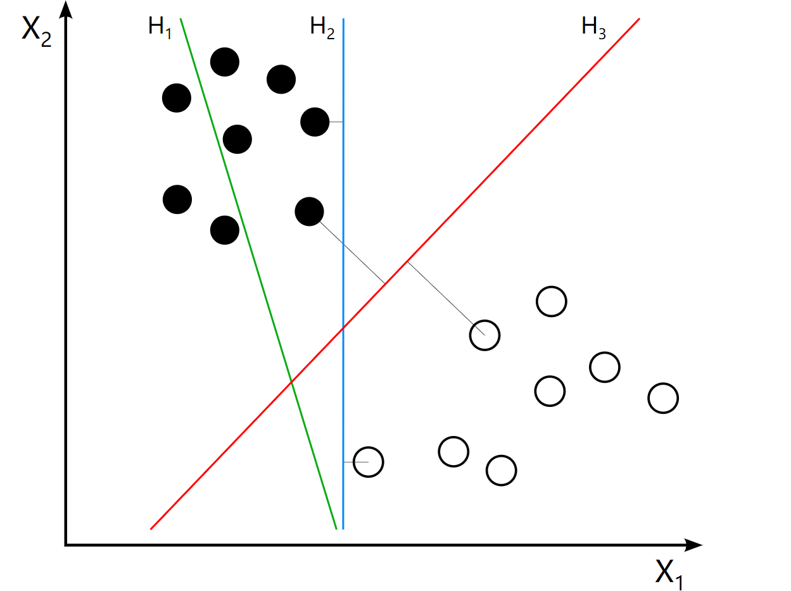
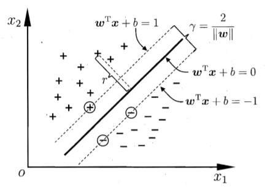
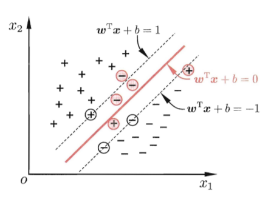

1.svm
1. 线性可分 SVM
(1). 基本问题
给定数据集 $D=\lbrace(\bm{x_1},y_1),(\bm{x_2},y_2),...\ ,(\bm{x_m},y_m)\rbrace$, $y_i\in\lbrace -1,+1\rbrace$，分类学习的基本想法是在样本空间中找到一个超平面 $\bm{w^\mathrm{T}}\bm{x}+b=0$，其中 $\bm{w}=(w_1,w_2,\ ...,w_d)$ 是法向量.
e.g.

- $\sf H_1$: 无法正确分类
- $\sf H_2$: 分割线与最近的数据点只有很小的间隔，噪声敏感、泛化能力弱
- $\sf H_3$: 可以用较大间隔完成分类
假设数据集 $D$ 是线性可分的 (
- 如何衡量被样本分开的程度，即分类器的效果
- 如何找到这样的超平面
(2). 基本型
若超平面可正确分开正负样本，意味着任意样本 $(\bm{x_i}, y_i)$ 到超平面的距离 $\dfrac{|\bm{w^\mathrm{T}}\bm{x_i}+b|}{||\bm{w}||}>0$，即
满足条件的超平面有无数多个，所有样本中最小的几何间隔 $\gamma_i$ 越大，效果越好
求解上述最优化问题时，不同超平面对应的最小几何间隔点 $(\bm{x'},y')$ 不同，很难直接求解。但分子 $y'(\bm{w^\mathrm{T}}\bm{x'}+b)>0$ 恒成立，因此可以等倍缩放超平面的参数 $\bm{w}, b$，使 $y'(\bm{w^\mathrm{T}}\bm{x'}+b)=1$ 恒成立
此时约束条件转化为

原问题转化为
此即为
定义: 函数间隔 (functional margin ): $\hat{\gamma_i}=y_i(\bm{w^\mathrm{T}}\bm{x_i}+b)$，即式 $(1.2)$
几何间隔 (geometry margin ): $\ \displaystyle\gamma_i=y_i\frac{\bm{w^\mathrm{T}}\bm{x_i}+b}{||\bm{w}||}$，即式 $(1.1)$
几何间隔不随 $\bm{w}、b$ 的等比例改变而改变，相当于normalize 的函数间隔(3). 对偶问题
该问题的拉格朗日函数:
$ \displaystyle L(\bm{w},b,\bm{\alpha})=\frac{1}{2}||\bm{w}||^2+\sum_{i=1}^m\alpha_i(1-y_i(\bm{w}^\mathrm{T}\bm{x_i}+b)) $
为构造对偶形式，分别对 $\bm{w}、b$ 求偏导，令之为零，得:
$\displaystyle \bm{w}=\sum_{i=1}^m\alpha_iy_i\bm{x_i},\qquad 0=\sum_{i=1}^m\alpha_iy_i $
代入 $L$，消去 $\bm{w}、b$，得到对偶形式
$\displaystyle \max_\alpha \ \ -\frac{1}{2}\sum_{i=1}^m\sum_{j=1}^m\alpha_i\alpha_jy_iy_j\bm{x_i^\mathrm{T}}\bm{x_j}+\sum_{i=1}^m\alpha_i,\quad\mathrm{s.t.}\enspace \alpha_i\geq 0,\enspace \sum\alpha_iy_i=0 $ $(1.4)$
解出 $\alpha$ 后，代回 $\bm{w}$ 和 $b$，即可得到最终的模型:
$\displaystyle f(\bm{x})=\bm{w}^\mathrm{T}\bm{x}+b=\sum_{i=1}^m\alpha_iy_i\bm{x_i^\mathrm{T}}\bm{x}+b $ $(1.5)$
由于原问题有不等式约束，上述过程需满足KKT 条件，要求
$\displaystyle \alpha_i\geq 0,\quad y_if(\bm{x_i})-1\geq 0,\quad \alpha_i(y_if(\bm{x_i})-1)=0 $
对于每个样本 $(\bm{x_i},y_i)$，考虑KKT 条件的两种情况:由此引出
- $\alpha_i=0$，此样本不会在分类器 (式 $(1.5)$) 中出现
- $\alpha_i > 0,\enspace y_if(\bm{x_i})=1$，则此样本位于边界上，是一个支持向量
SVM 的重要性质: 训练完成后，大量样本无需保留，最终模型仅与支持向量有关。
“支持向量机”这个名字也是由此而来，暗示此类学习器的关键是通过支持向量构建出解，且复杂度与支持向量的数目相关。2. 核技巧
如果在原始样本空间中线性不可分，可将样本映射至更高维空间，使其在特征空间中线性可分。这一部分假设样本在特征空间上是线性可分的。
(1). 基本思想
假设存在满足条件的映射 $\phi(\bm{x}):\ \mathcal{X}\to\mathcal{H}$，将其代入式 $(1.3)$，得到原问题高维的形式:
$ \displaystyle \underset{\bm{w}, b}{\min}\enspace \frac{1}{2}||\bm{w}||^2,\quad\mathrm{s.t.}\enspace y_i(\bm{w^\mathrm{T}}\phi(\bm{x_i})+b)\geq 1,\quad i=1,2,...,m $其对偶形式涉及计算 $\phi(\bm{x_i})^\mathrm{T}\phi(\bm{x_j})$，由于特征空间维数可能很高 (甚至是无穷维，无法计算)，为避开计算障碍，引入核函数 $K(\bm{x_i},\bm{x_j})=\langle\bm{x_i},\bm{x_j}\rangle=\phi(\bm{x_i})^\mathrm{T}\phi(\bm{x_j})$，对偶式 $(1.4)$ 转化为:$\displaystyle \max_\alpha \ \ -\frac{1}{2}\sum_{i=1}^m\sum_{j=1}^m\alpha_i\alpha_jy_iy_j\phi(\bm{x_i})^\mathrm{T}\phi(\bm{x_j})+\sum_{i=1}^m\alpha_i,\quad\mathrm{s.t.}\enspace \alpha_i\geq 0,\enspace \sum\alpha_iy_i=0 $求解后即可得到
$\displaystyle f(\bm{x})=\bm{w^\mathrm{T}}\phi(\bm{x})+b=\sum_{i=1}^m\alpha_iy_iK(\bm{x},\bm{x_i})+b $定义: 设输入空间为 $\mathcal{X}$ (欧式空间 $\mathbb{R}^n$ 子集)，特征空间为 $\mathcal{H}$ (希尔伯特空间)，若存在 $\phi(\bm{x}):\ \mathcal{X}\to\mathcal{H}$，使得对所有 $\bm{x},\bm{z}\in\mathcal{X}$，满足 $K(\bm{x},\bm{z})=\phi(\bm{x})\cdot\phi(\bm{z})$，就称 $K(\bm{x},\bm{z})$ 为核函数e.g. 取 $\mathcal{X}=\mathbb{R}^2,\enspace\mathcal{H}=\mathbb{R}^4$，$\phi(\bm{x})=(x_1^2,\ x_1x_2,\ x_1x_2,\ x_2^2)$，则 $K(\bm{x},\bm{z})=(\bm{x}\cdot\bm{z})^2$(2). 正定核判定
给定函数 $K(\cdot,\cdot)$，我们需要一种方法，直接判定其是否满足核函数的条件
定理: 设 $K:\ \mathcal{X\times X}\to\mathbb{R}$ 是对称函数，$i=1,2,...,m$
$K(\bm{x},\bm{z})$ 是正定核 $\Longleftrightarrow$ 对 $\forall \bm{x_i}\in\mathcal{X}$，$K(\bm{x},\bm{z})$ 对应的Gram 矩阵 $[K(\bm{x_i},\bm{x_j})]_{m\times m}$ 半正定
(任何核函数都饮食定义了一个再生希尔伯特空间)由于特征空间未必线性可分，核函数往往是
SVM 的最大变数，不合适的核函数会导致性能不佳。实际应用中，核函数的有效性需要通过实验验证。3. 软间隔
SVM 在实际应用中，硬间隔
SVM 面临的问题：缓解的方法是允许某些样本出错，不满足约束 $y_i(\bm{w^\mathrm{T}\bm{x}+b})\geq 1$，且出错的样本应尽可能少，由此引入软间隔 (
- 样本很难在样本空间或特征空间中是线性可分的
- 即便线性可分，也难以判断是不是由过拟合造成的
soft margin ) 的概念
(1). 基本问题
为每个样本 $(\bm{x_i},y_i)$ 引入一个松弛变量 $\xi_i$ (
slack variables )，令约束条件变为$y_i(\bm{w^\mathrm{T}}\bm{x_i}+b)\geq 1-\xi_i$为使出错点尽可能少，还要在目标函数中引入惩罚项，因此原问题变为
$ \displaystyle \underset{\bm{w}, b, \xi}{\min}\enspace \frac{1}{2}||\bm{w}||^2+C\sum_{i=1}^n\xi_i, \quad\mathrm{s.t.}\enspace y_i(\bm{w^\mathrm{T}}\bm{x_i}+b)\geq 1-\xi_i,\quad \xi_i> 0,\quad i=1,2,...,n $ $(3.1)$其中 $C> 0$ 为惩罚系数，值越大则对误分类的惩罚越大，一般由应用问题决定，$C\to\infty$ 时和硬间隔等价。
(2). 对偶问题
原问题拉格朗日函数为
$\displaystyle L(\bm{w},b,\bm{\xi},\bm{\alpha},\bm{\mu})=\frac{1}{2}||\bm{w}||^2+C\sum_{i=1}^n \xi_i-\sum_{i=1}^n \alpha_i(y_i(\bm{w^\mathrm{T}}\bm{x_i}+b)-1+\xi_i)-\sum_{i=1}^n\mu_i\xi_i $其中 $\alpha_i\geq 0$，$\mu_i\geq 0$。对 $L$ 求 $\bm{w}、b、\bm{\xi}$ 的偏导，令之为 $0$，代回 $L$，得到对偶形式:$\displaystyle \underset{\alpha}{\max}\enspace -\frac{1}{2}\sum_{i=1}^n\sum_{j=1}^n \alpha_i\alpha_j y_i y_j(\bm{x_i^\mathrm{T}}\bm{x_j})+\sum_{i=1}^n\alpha_i $ $(3.2)$
$\displaystyle \mathrm{s.t.}\enspace \sum_{i=1}^n \alpha_i y_i = 0,\enspace 0\leq \alpha_i\leq C$求解完成并代回原式子，得到和 $(1.5)$ 一样的式子
$\displaystyle f(\bm{x})=\bm{w}^\mathrm{T}\bm{x}+b=\sum_{i=1}^m\alpha_iy_i\bm{x_i^\mathrm{T}}\bm{x}+b $
类似地，KKT 条件要求$ \begin{cases} \displaystyle \alpha_i\geq 0,\quad \mu_i\geq 0 \\ y_if(\bm{x_i})-1+\xi_i\geq 0 \\ \alpha_i(y_if(\bm{x_i})-1+\xi_i)=0 \\ \xi\geq 0,\quad \mu_i\xi_i=0 \end{cases} $对任意样本 $(\bm{x_i},y_i)$，讨论
KKT 的两种情况由此，软间隔的支持向量或者在间隔边界上，或者在边界之间且被正确分类，或者在误分一侧。
- 若 $\alpha_i=0$，该样本不在分类器中出现
- 若 $\alpha_i > 0$，则 $y_if(\bm{x_i})=1-\xi_i$，该样本是支持向量
- 若 $\alpha_i< C$，则 $\mu_i> 0$，进而 $\xi_i=0$，该样本在边界上
- 若 $\alpha_i= C$，则 $\mu_i= 0$，此时，若 $\xi_i\leq 1$，该样本在最大间隔内部；若 $\xi_i >1$，该样本被错误分类
(3). 损失函数
定理: 软间隔SVM 原始最优化问题 式 $(3.1)$ 等价于最优化问题
$\displaystyle \underset{w,b}{\min}\enspace \sum_{i=1}^n \ell_{\mathrm{hinge}}(y_i(\bm{w^\mathrm{T}}\bm{x})+b)+\lambda||\bm{w}||^2 $其中 $\ell_{\mathrm{hinge}}(z)=\mathrm{max}(0, 1-z)$，也称 "合页损失函数"从这个角度看，目标函数 式 $(3.1)$ 也可写做
$\displaystyle \underset{\bm{w},b}{\min}\enspace \frac{1}{2}||\bm{w}||^2+C\sum_{i=1}^m\ell(y_i(\bm{w^\mathrm{T}}\bm{x_i}+b)-1) $这样，就将原问题转化为
object = loss + regularization 的形式，